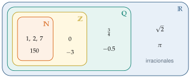
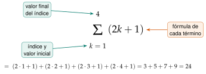
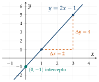
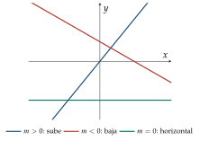
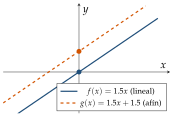
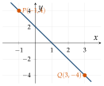
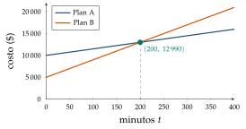
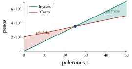

Fundamentos de álgebra
- reconocer los conjuntos de números y las propiedades de la suma y el producto;
- simplificar expresiones algebraicas y usar la notación de sumatoria \(\sum\);
- resolver ecuaciones lineales con una incógnita;
- escribir, interpretar y graficar la ecuación de una recta;
- distinguir una función lineal de una que no lo es.
El álgebra lineal estudia, en el fondo, una sola idea: cosas que se pueden sumar y multiplicar por números, y reglas que respetan esas sumas y productos. Antes de llegar a vectores y matrices necesitamos tener firmes unas pocas herramientas del álgebra escolar. Este capítulo es corto en ideas, pero cada una reaparecerá muchas veces en el resto del libro.
1.1 Conceptos
1.1.1 Los números con los que trabajaremos
Usaremos casi siempre los números reales, que representamos como los puntos de una recta. Dentro de ellos hay familias más pequeñas que conviene reconocer.
- Naturales \(\N=\{1,2,3,\dots\}\): los que sirven para contar.
- Enteros \(\Z=\{\dots,-2,-1,0,1,2,\dots\}\): naturales, el cero y los negativos.
- Racionales \(\Q\): los que se escriben como fracción \(\dfrac{p}{q}\) con \(p,q\) enteros y \(q\neq 0\). Sus decimales terminan (\(0.25\)) o se repiten (\(0.333\ldots\)).
- Reales \(\R\): todos los puntos de la recta numérica. Incluye a los irracionales como \(\sqrt2\) o \(\pi\), cuyos decimales no terminan ni se repiten.

Las reglas del juego: propiedades de la suma y el producto
Todo el álgebra se apoya en un puñado de reglas. Las escribimos aquí porque en el Capítulo 6 veremos que los vectores obedecen exactamente las mismas reglas.
Para todos los números reales \(a\), \(b\), \(c\):
| Nombre | Suma | Producto |
|---|---|---|
| Conmutativa | \(a+b=b+a\) | \(ab=ba\) |
| Asociativa | \((a+b)+c=a+(b+c)\) | \((ab)c=a(bc)\) |
| Elemento neutro | \(a+0=a\) | \(a\cdot 1=a\) |
| Inverso | \(a+(-a)=0\) | \(a\cdot\dfrac1a=1\quad(a\neq0)\) |
| Distributiva | \(a(b+c)=ab+ac\) | |
¿Qué propiedad justifica que \(5\cdot(2\cdot 7)=(5\cdot2)\cdot7\)? ¿Y que \(3(x+4)=3x+12\)?
Ver respuesta
1.1.2 Expresiones algebraicas
Una variable es una letra que representa un número que puede cambiar o que no conocemos. Una expresión algebraica combina números y variables con operaciones, por ejemplo \(3x^2-5x+2\). Cada sumando es un término; el número que multiplica a la parte con letras es su coeficiente.
Dos términos son semejantes si tienen exactamente la misma parte literal (mismas letras con los mismos exponentes). Solo los términos semejantes se pueden sumar: se suman sus coeficientes y se conserva la parte literal.
La propiedad distributiva se usa en las dos direcciones:
Un signo menos delante de un paréntesis cambia el signo de todos los términos de adentro: \(-(x-3y)=-x+3y\), y no \(-x-3y\).
1.1.3 La notación de sumatoria
En álgebra lineal sumaremos muchas cantidades que siguen un patrón (por ejemplo, al multiplicar matrices). Para no escribir sumas larguísimas usamos la letra griega sigma mayúscula, \(\Sigma\).
Si \(a_1,a_2,\dots,a_n\) son números,
Se lee “suma de \(a_i\) desde \(i=1\) hasta \(n\)”. La letra \(i\) es el índice: toma los valores \(1,2,\dots,n\), uno por uno.

Calcula \(\displaystyle\sum_{i=1}^{3} i^2\).
Ver respuesta
1.1.4 Ecuaciones lineales con una incógnita
Una ecuación es lineal en la incógnita \(x\) si, después de simplificar, tiene la forma
La incógnita aparece solo elevada a 1: no hay \(x^2\), ni \(\sqrt{x}\), ni \(\dfrac1x\).
Resolver la ecuación es encontrar todos los valores de \(x\) que la hacen verdadera. Al pasar de \(ax=b\) a la solución pueden ocurrir tres casos, y es importante conocerlos desde ya, porque en el Capítulo 2 se repetirán con sistemas de muchas ecuaciones:
| Caso | Ejemplo | Soluciones |
|---|---|---|
| \(a\neq 0\) | \(3x=12\) | una única: \(x=b/a=4\) |
| \(a=0\) y \(b\neq0\) | \(0x=5\) | ninguna (la ecuación es falsa siempre) |
| \(a=0\) y \(b=0\) | \(0x=0\) | infinitas (todo \(x\) sirve) |
1.1.5 Ecuaciones lineales con dos incógnitas: la recta
Una ecuación como \(2x+y=5\) tiene infinitas soluciones: cada par \((x,y)\) que la cumple, como \((0,5)\), \((1,3)\) o \((2.5,0)\). Si dibujamos todos esos pares en el plano cartesiano, obtenemos una recta. Por eso estas ecuaciones se llaman lineales.
- Forma general: \(ax+by=c\), con \(a\) y \(b\) no ambos cero.
- Forma pendiente-intercepto: \(y=mx+n\), donde \(m\) es la pendiente y \(n\) es el intercepto con el eje \(y\) (el punto \((0,n)\)).
- Forma punto-pendiente: \(y-y_0=m(x-x_0)\), recta de pendiente \(m\) que pasa por \((x_0,y_0)\).
La pendiente entre dos puntos \((x_1,y_1)\) y \((x_2,y_2)\) es


Dos rectas \(y=m_1x+n_1\) e \(y=m_2x+n_2\) son paralelas si \(m_1=m_2\) y perpendiculares si \(m_1\cdot m_2=-1\).
¿Cuál es la pendiente de la recta que pasa por \((1,2)\) y \((4,11)\)?
Ver respuesta
1.1.6 Funciones lineales: la semilla del álgebra lineal
Una función asigna a cada entrada \(x\) una única salida \(f(x)\). Entre todas las funciones hay unas muy especiales:
Una función \(f:\R\to\R\) es lineal si para todos los números \(x\), \(y\) y todo escalar \(c\):
En una variable, las funciones lineales son exactamente las de la forma \(f(x)=mx\).

En el colegio se dice que \(g(x)=2x+3\) es “función lineal” porque su gráfica es una recta. En álgebra lineal somos más exigentes: \(g\) no es lineal, porque \(g(0)=3\neq0\) y \(g(1+1)=7\neq g(1)+g(1)=10\). A las funciones \(mx+n\) con \(n\neq0\) las llamaremos afines.
Una función lineal “respeta” las sumas y los productos por números. En el Capítulo 8 generalizaremos esta idea a funciones que transforman vectores: las transformaciones lineales.
1.2 Cómo utilizar los conceptos
- Elimina paréntesis usando la propiedad distributiva (¡cuidado con los signos!).
- Si hay fracciones, multiplica toda la ecuación por el mínimo común múltiplo de los denominadores.
- Agrupa los términos con \(x\) en un lado y los números en el otro (sumando o restando lo mismo a ambos lados).
- Reduce términos semejantes hasta llegar a \(ax=b\).
- Si \(a\neq0\), divide por \(a\). Si \(a=0\), decide si no hay solución (\(b\neq0\)) o si hay infinitas (\(b=0\)).
- Comprueba reemplazando el valor en la ecuación original.
- Si te dan dos puntos, calcula la pendiente \(m=\frac{y_2-y_1}{x_2-x_1}\).
- Usa la forma punto-pendiente \(y-y_0=m(x-x_0)\) con cualquiera de los puntos.
- Despeja \(y\) para obtener \(y=mx+n\), o pasa todo a un lado para la forma general \(ax+by=c\).
- Comprueba que el otro punto también cumple la ecuación.
- Haz \(x=0\) y despeja \(y\): obtienes el corte con el eje \(y\).
- Haz \(y=0\) y despeja \(x\): obtienes el corte con el eje \(x\).
- Marca los dos puntos y únelos. (Si la recta pasa por el origen, usa otro punto cualquiera.)
- Evalúa en \(0\): si \(f(0)\neq0\), no es lineal (porque \(f(0)=f(0\cdot0)=0\cdot f(0)=0\)).
- Si \(f(0)=0\), verifica las dos condiciones \(f(x+y)=f(x)+f(y)\) y \(f(cx)=cf(x)\) con letras, no con números particulares.
- Para mostrar que no es lineal basta un contraejemplo numérico.
- Dividir por una expresión que podría valer cero (por ejemplo, por \(a-2\) sin saber si \(a=2\)).
- Multiplicar por el denominador común solo algunos términos de la ecuación.
- Calcular la pendiente como \(\frac{x_2-x_1}{y_2-y_1}\) (¡está al revés!).
- Creer que \(\sqrt{a+b}=\sqrt a+\sqrt b\) o que \((a+b)^2=a^2+b^2\): la raíz y el cuadrado no son lineales.
1.3 Ejemplos resueltos
Simplifica \(4(3x-2)-2(5x+1)\).
Solución. Distribuimos con cuidado el signo del segundo paréntesis:
Si queremos, factorizamos: \(2x-10=2(x-5)\).
Calcula \(\displaystyle\sum_{k=1}^{4}(3k-1)\).
Solución. Forma directa: \(k=1,2,3,4\) dan los términos \(2,\ 5,\ 8,\ 11\), que suman \(26\).
Con las reglas de la sumatoria:
Resuelve \(5(x-1)-2(x+3)=4\).
Solución.
Comprobación: \(5(5-1)-2(5+3)=20-16=4\). ✓
Resuelve \(\dfrac{x}{3}+\dfrac{1}{2}=\dfrac{5}{6}\).
Solución. El mínimo común múltiplo de \(3\), \(2\) y \(6\) es \(6\). Multiplicamos cada término por \(6\):
Encuentra la ecuación de la recta que pasa por \(P=(-1,4)\) y \(Q=(3,-4)\) y grafícala.
Solución. Pendiente: \(m=\dfrac{-4-4}{3-(-1)}=\dfrac{-8}{4}=-2\). Con el punto \(P\):
En forma general: \(2x+y=2\). Comprobamos con \(Q\): \(2\cdot3+(-4)=2\). ✓

Encuentra el punto donde se cortan \(y=x+1\) e \(y=-2x+7\).
Solución. En el punto de corte ambas rectas tienen el mismo \(y\), así que igualamos:
Las rectas se cortan en \((2,3)\). Este es nuestro primer sistema de ecuaciones lineales; en el próximo capítulo aprenderemos a resolver sistemas con muchas más ecuaciones e incógnitas.
Decide si \(f(x)=-4x\) y \(g(x)=x^2\) son funciones lineales.
Solución. Para \(f\): \(f(x+y)=-4(x+y)=-4x-4y=f(x)+f(y)\) y \(f(cx)=-4cx=c(-4x)=cf(x)\). Es lineal.
Para \(g\): un contraejemplo basta. \(g(1+1)=g(2)=4\), pero \(g(1)+g(1)=1+1=2\). No es lineal.
1.4 Aplicaciones en la vida real
Una compañía ofrece dos planes: Plan A: $9 990 fijos al mes más $15 por minuto de llamadas internacionales; Plan B: $4 990 fijos más $40 por minuto. Si \(t\) son los minutos usados,
Ambos costos son rectas. El plan A conviene cuando \(A(t)<B(t)\):
Quien habla más de 200 minutos debe elegir el plan A; con menos, el B.

La relación entre grados Celsius (\(C\)) y Fahrenheit (\(F\)) es la recta \(F=\tfrac95C+32\). La pendiente \(\tfrac95=1.8\) dice que cada grado Celsius equivale a 1.8 grados Fahrenheit; el intercepto \(32\) es la temperatura de congelación del agua en Fahrenheit. Despejando obtenemos la conversión inversa \(C=\tfrac59(F-32)\). Por ejemplo, \(98.6\,^\circ\mathrm{F}\) (temperatura corporal) equivalen a \(\tfrac59(66.6)=37\,^\circ\mathrm{C}\).
Una persona fabrica y vende polerones estampados. Arrendar el taller y la máquina le cuesta $200 000 al mes (costo fijo) y cada polerón le cuesta $6 000 en materiales (costo variable). Vende cada uno a $14 000. Si \(q\) es la cantidad mensual:
El punto de equilibrio es donde \(I(q)=C(q)\): \(8\,000q=200\,000\), es decir, \(q=25\) polerones. Con menos de 25 hay pérdida; con más, ganancia. La ganancia \(G(q)=I(q)-C(q)=8\,000q-200\,000\) es otra recta, cuya pendiente (\(\$8\,000\)) es la ganancia por polerón adicional.

En un mapa a escala \(1:50\,000\), cada centímetro representa \(50\,000\) cm \(=0.5\) km. La distancia real es \(f(d)=0.5\,d\) (en km), con \(d\) en centímetros del mapa. Esta función sí es lineal en el sentido estricto: duplicar la distancia en el mapa duplica la real, y la distancia de dos tramos seguidos es la suma de sus distancias. Lo mismo ocurre al escalar una receta: para \(3\) veces más personas se usa \(3\) veces más de cada ingrediente.
1.5 Ejercicios de práctica
- 1.1
Indica a qué conjuntos (\(\N\), \(\Z\), \(\Q\), \(\R\)) pertenece cada número:
- \(-7\)
- \(\tfrac34\)
- \(\sqrt2\)
- \(0.25\)
- \(12\)
- 1.2
- 1.3
Calcula:
- \(\displaystyle\sum_{i=1}^{4}i^2\)
- \(\displaystyle\sum_{k=1}^{3}(2k+1)\)
- \(\displaystyle\sum_{j=1}^{5}3\)
- 1.4
- 1.5
Encuentra la pendiente y el intercepto con el eje \(y\) de cada recta:
- \(y=-3x+4\)
- \(2x+5y=10\)
- \(x-4y=8\)
- 1.6
Encuentra la ecuación de la recta:
- de pendiente \(2\) que pasa por \((1,3)\);
- que pasa por \((2,-1)\) y \((5,8)\);
- horizontal que pasa por \((4,-2)\).
- 1.7
Escribe usando notación de sumatoria:
- \(2+4+6+\cdots+20\)
- \(a_1b_1+a_2b_2+a_3b_3\)
- \(1-\tfrac12+\tfrac13-\tfrac14\)
- 1.8
Despeja la variable indicada:
- \(A=\dfrac{b\,h}{2}\), despeja \(h\).
- \(F=\tfrac95C+32\), despeja \(C\).
- \(ax+by=c\), despeja \(y\) (suponiendo \(b\neq0\)).
- 1.9
¿Cuáles de estas funciones son lineales? Justifica.
- \(f(x)=5x\)
- \(g(x)=5x+1\)
- \(h(x)=x^2\)
- \(k(x)=-\tfrac{x}{3}\)
- 1.10¿Cuáles de los puntos pertenecen a la recta \(3x-2y=6\)? a) \((2,0)\) b) \((0,-3)\) c) \((4,2)\)Ver solución
- 1.11
Decide si cada par de rectas es paralelo, perpendicular o ninguna de las dos:
- \(y=2x+3\) y \(4x-2y=1\)
- \(y=3x-1\) y \(x+3y=6\)
- \(y=x\) e \(y=2x\)
- 1.12Encuentra el punto de intersección de las rectas \(y=3x-4\) e \(y=-x+8\).Ver solución
- 1.13Considera la ecuación \(ax+3=2x+a\), donde \(a\) es un número fijo (un parámetro). ¿Para qué valores de \(a\) tiene solución única? ¿Qué pasa cuando \(a=2\)?Ver solución
- 1.14Un plan cuesta $9 990 más $15 por minuto, y otro $4 990 más $40 por minuto. Plantea y resuelve una inecuación para saber desde cuántos minutos conviene el primero.Ver solución
- 1.15¿Existe una temperatura que se exprese con el mismo número en grados Celsius y en Fahrenheit? Encuéntrala usando \(F=\tfrac95C+32\).Ver solución
- 1.16Un taxi cobra $350 al subir y $800 por kilómetro recorrido. Si un viaje costó $6 350, ¿cuántos kilómetros se recorrieron?Ver solución
- 1.17
Una emprendedora vende pulseras a $3 000 cada una. Su costo fijo mensual es $120 000 y cada pulsera le cuesta $1 400 en materiales.
- Escribe las funciones de costo \(C(q)\) e ingreso \(I(q)\).
- ¿Cuántas pulseras debe vender para no perder dinero?
- ¿Cuál es su ganancia si vende 100 pulseras?
- 1.18¿Cuántos litros de jugo puro (100 % fruta) hay que agregar a 6 litros de un néctar con 40 % de fruta para obtener una bebida con 70 % de fruta?Ver solución
- 1.19
Nombra la propiedad de los números reales que se usa en cada igualdad:
- \(3+(4+5)=(3+4)+5\)
- \(2(x+y)=2x+2y\)
- \(x\cdot1=x\)
- \(7+(-7)=0\)
- 1.20Desafío. Demuestra que \(f(x)=mx\) cumple \(f(x+y)=f(x)+f(y)\) y \(f(cx)=cf(x)\) para todos \(x,y,c\). Luego muestra con un contraejemplo que \(g(x)=mx+n\), con \(n\neq0\), no las cumple.Ver solución
1.6 Solucionario
1.1 Solución del ejercicio 1.1
a) \(\Z,\Q,\R\). b) \(\Q,\R\). c) Solo \(\R\) (es irracional). d) \(\Q,\R\) (pues \(0.25=\tfrac14\)). e) \(\N,\Z,\Q,\R\).↑ volver al enunciado1.2 Solución del ejercicio 1.2
a) \(6x-15-4x+8=2x-7\). b) \(-3a+4b\). c) \(-x+3y+2x+2y=x+5y\).↑ volver al enunciado1.3 Solución del ejercicio 1.3
a) \(1+4+9+16=30\). b) \(3+5+7=15\). c) \(3+3+3+3+3=5\cdot3=15\).↑ volver al enunciado1.4 Solución del ejercicio 1.4
a) \(4x=20\Rightarrow x=5\). b) \(3x+6=2x-5\Rightarrow x=-11\). c) Multiplicando por 6: \(2x+3=5\Rightarrow x=1\). d) \(0.2x=2.2\Rightarrow x=11\).↑ volver al enunciado1.5 Solución del ejercicio 1.5
a) \(m=-3\), intercepto \(4\). b) \(y=-\tfrac25x+2\): \(m=-\tfrac25\), intercepto \(2\). c) \(y=\tfrac14x-2\): \(m=\tfrac14\), intercepto \(-2\).↑ volver al enunciado1.6 Solución del ejercicio 1.6
a) \(y-3=2(x-1)\Rightarrow y=2x+1\). b) \(m=\frac{8-(-1)}{5-2}=3\); \(y+1=3(x-2)\Rightarrow y=3x-7\). c) \(y=-2\).↑ volver al enunciado1.7 Solución del ejercicio 1.7
a) \(\displaystyle\sum_{k=1}^{10}2k\). b) \(\displaystyle\sum_{i=1}^{3}a_ib_i\). c) \(\displaystyle\sum_{k=1}^{4}\frac{(-1)^{k+1}}{k}\).↑ volver al enunciado1.8 Solución del ejercicio 1.8
a) \(h=\dfrac{2A}{b}\). b) \(C=\tfrac59(F-32)\). c) \(y=\dfrac{c-ax}{b}\).↑ volver al enunciado1.9 Solución del ejercicio 1.9
a) Lineal (\(f(x)=mx\) con \(m=5\)). b) No: \(g(0)=1\neq0\) (es afín). c) No: \(h(1+1)=4\neq h(1)+h(1)=2\). d) Lineal, con \(m=-\tfrac13\).↑ volver al enunciado1.10 Solución del ejercicio 1.10
a) Sí: \(3\cdot2-0=6\). b) Sí: \(0-2(-3)=6\). c) No: \(12-4=8\neq6\).↑ volver al enunciado1.11 Solución del ejercicio 1.11
a) La segunda es \(y=2x-\tfrac12\): misma pendiente, paralelas. b) La segunda es \(y=-\tfrac13x+2\); como \(3\cdot(-\tfrac13)=-1\), son perpendiculares. c) Pendientes \(1\) y \(2\): ninguna de las dos (se cortan en el origen).↑ volver al enunciado1.12 Solución del ejercicio 1.12
\(3x-4=-x+8\Rightarrow 4x=12\Rightarrow x=3\), \(y=5\). Punto \((3,5)\).↑ volver al enunciado1.13 Solución del ejercicio 1.13
Agrupando: \((a-2)x=a-3\). Si \(a\neq2\), hay solución única \(x=\dfrac{a-3}{a-2}\). Si \(a=2\) queda \(0x=-1\), que no tiene solución.↑ volver al enunciado1.14 Solución del ejercicio 1.14
\(9\,990+15t<4\,990+40t\iff 5\,000<25t\iff t>200\). Conviene desde los 201 minutos.↑ volver al enunciado1.15 Solución del ejercicio 1.15
\(C=\tfrac95C+32\Rightarrow -\tfrac45C=32\Rightarrow C=-40\). Así, \(-40\,^\circ\mathrm{C}=-40\,^\circ\mathrm{F}\).↑ volver al enunciado1.16 Solución del ejercicio 1.16
\(350+800k=6\,350\Rightarrow 800k=6\,000\Rightarrow k=7.5\) km.↑ volver al enunciado1.17 Solución del ejercicio 1.17
a) \(C(q)=120\,000+1\,400q\), \(I(q)=3\,000q\). b) \(3\,000q=120\,000+1\,400q\Rightarrow 1\,600q=120\,000\Rightarrow q=75\) pulseras. c) \(G(100)=300\,000-260\,000=\$40\,000\).↑ volver al enunciado1.18 Solución del ejercicio 1.18
Si \(x\) son los litros de jugo puro: \(0.4\cdot6+1\cdot x=0.7\,(6+x)\), o sea \(2.4+x=4.2+0.7x\), de donde \(0.3x=1.8\) y \(x=6\) litros.↑ volver al enunciado1.19 Solución del ejercicio 1.19
a) Asociativa de la suma. b) Distributiva. c) Neutro multiplicativo. d) Inverso aditivo.↑ volver al enunciado1.20 Solución del ejercicio 1.20
\(f(x+y)=m(x+y)=mx+my=f(x)+f(y)\) y \(f(cx)=m(cx)=c(mx)=cf(x)\) (usamos la distributiva, la asociativa y la conmutativa). Para \(g\): \(g(0+0)=g(0)=n\), pero \(g(0)+g(0)=2n\), y \(n\neq2n\) porque \(n\neq0\).↑ volver al enunciado
¿Terminaste de estudiar este capítulo?